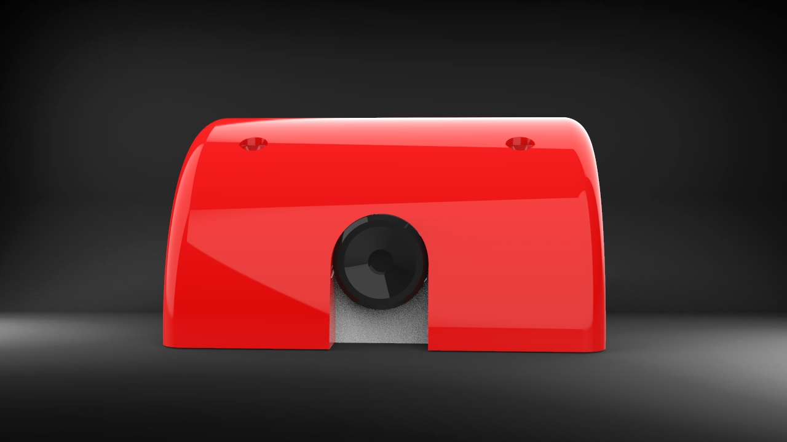
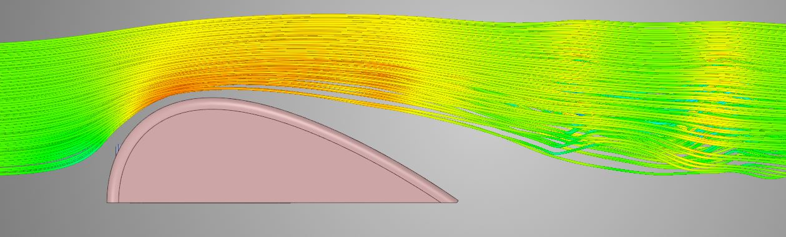

Tire Temperature Sensors
Overview
The first ever project I worked on during my time at the University of Pennsylvania was to model enclosures for tire temperature sensors. This involved designing a small, watertight, and aerodynamic PEI enclosure, to be installed on the side wing of a race car. Tire temperature data allows for a better understanding of the suspension setup of the car.

Design Goals
The design of the enclosure was guided by the following design goals:
- Design lightweight and IP-68 waterproof enclosures for the sensors
- Reduce the drag generated by the enclosure by modelling it from a NACA airfoil
- Validate the design using CFD and testing data
- Allow for the easy access of the sensors in case of malfunction
Design Overview
Enclosure Shape
The enclosure is made of a top and bottom part. The bottom part (shown in white), houses the PCB (shown in black). Ample space is given for the wiring, while the camera sensor is fit tightly against the bottom part. The aerodynamic cover (shown in red) is modelled after a NACA airfoil, and is secured on top of the bottom part.
Waterproofing
Laser cut foam was added to every interface between the bottom part and the aerodynamic cover. The camera and wiring holes were also fitted with foam to prevent leaks.
Testing
CFD was used to determine the effectiveness of the aerodynamic cover, which reduces the turbulent air in the wake of the enclosure, allowing for the sensors to have minimal impact on the efficiency of the race car's aero package.
